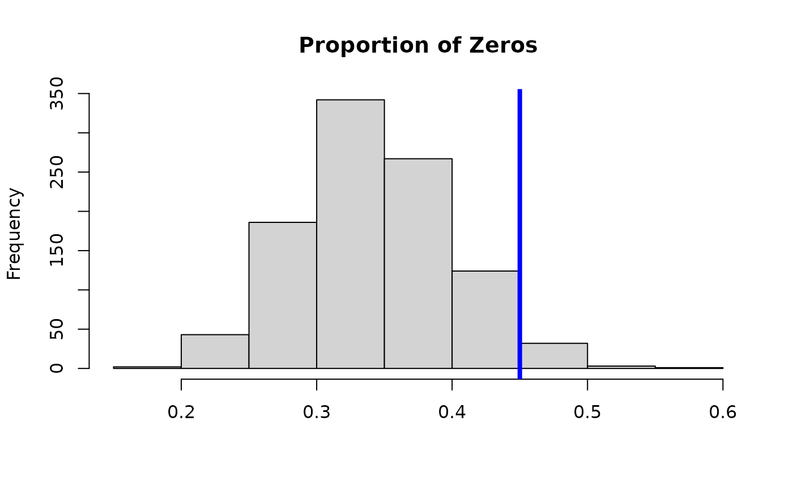

Run the MCMC algorithm for a STAR Bayesian additive model The transformation can be known (e.g., log or sqrt) or unknown (Box-Cox or estimated nonparametrically) for greater flexibility.
Usage
bam_star(
y,
X_lin,
X_nonlin,
splinetype = "orthogonal",
transformation = "np",
y_max = Inf,
nsave = 1000,
nburn = 1000,
nskip = 0,
save_y_hat = FALSE,
verbose = TRUE
)Arguments
- y
n x 1vector of observed counts- X_lin
n x pLmatrix of predictors to be modelled as linear- X_nonlin
n x pNLmatrix of predictors to be modelled as nonlinear- splinetype
Type of spline to use for modelling the nonlinear predictors; must be either "orthogonal" (orthogonalized splines--the default) or "thinplate" (low-rank thin plate splines)
- transformation
transformation to use for the latent data; must be one of
"identity" (identity transformation)
"log" (log transformation)
"sqrt" (square root transformation)
"np" (nonparametric transformation estimated from empirical CDF)
"pois" (transformation for moment-matched marginal Poisson CDF)
"neg-bin" (transformation for moment-matched marginal Negative Binomial CDF)
"box-cox" (box-cox transformation with learned parameter)
"ispline" (transformation is modeled as unknown, monotone function using I-splines)
- y_max
a fixed and known upper bound for all observations; default is
Inf- nsave
number of MCMC iterations to save
- nburn
number of MCMC iterations to discard
- nskip
number of MCMC iterations to skip between saving iterations, i.e., save every (nskip + 1)th draw
- save_y_hat
logical; if TRUE, compute and save the posterior draws of the expected counts, E(y), which may be slow to compute
- verbose
logical; if TRUE, print time remaining
Value
a list with at least the following elements:
coefficients: the posterior mean of the coefficientsfitted.values: the posterior mean of the conditional expectation of the countsypost.coefficients: posterior draws of the coefficientspost.fitted.values: posterior draws of the conditional mean of the countsypost.pred: draws from the posterior predictive distribution ofypost.lambda: draws from the posterior distribution oflambdapost.sigma: draws from the posterior distribution ofsigmapost.log.like.point: draws of the log-likelihood for each of thenobservationsWAIC: Widely-Applicable/Watanabe-Akaike Information Criterionp_waic: Effective number of parameters based on WAIC
In the case of transformation="ispline", the list also contains
post.g: draws from the posterior distribution of the transformationgpost.sigma.gamma: draws from the posterior distribution ofsigma.gamma, the prior standard deviation of the transformation g() coefficients
Details
STAR defines a count-valued probability model by (1) specifying a Gaussian model for continuous *latent* data and (2) connecting the latent data to the observed data via a *transformation and rounding* operation.
Posterior and predictive inference is obtained via a Gibbs sampler that combines (i) a latent data augmentation step (like in probit regression) and (ii) an existing sampler for a continuous data model.
There are several options for the transformation. First, the transformation
can belong to the *Box-Cox* family, which includes the known transformations
'identity', 'log', and 'sqrt', as well as a version in which the Box-Cox parameter
is inferred within the MCMC sampler ('box-cox'). Second, the transformation
can be estimated (before model fitting) using the empirical distribution of the
data y. Options in this case include the empirical cumulative
distribution function (CDF), which is fully nonparametric ('np'), or the parametric
alternatives based on Poisson ('pois') or Negative-Binomial ('neg-bin')
distributions. For the parametric distributions, the parameters of the distribution
are estimated using moments (means and variances) of y. Third, the transformation can be
modeled as an unknown, monotone function using I-splines ('ispline'). The
Robust Adaptive Metropolis (RAM) sampler is used for drawing the parameter
of the transformation function.
Examples
# \donttest{
# Simulate data with count-valued response y:
sim_dat = simulate_nb_friedman(n = 100, p = 5, seed=32)
y = sim_dat$y; X = sim_dat$X
# Linear and nonlinear components:
X_lin = as.matrix(X[,-(1:3)])
X_nonlin = as.matrix(X[,(1:3)])
# STAR: nonparametric transformation
fit = bam_star(y = y, X_lin = X_lin, X_nonlin = X_nonlin)
#> [1] "Burn-In Period"
#> [1] "Starting sampling"
#> [1] "-0.01 seconds remaining"
#> [1] "Total time: 27 seconds"
# What is included:
names(fit)
#> [1] "coefficients" "post.coefficients" "post.pred"
#> [4] "post.predtest" "post.sigma" "post.log.like.point"
#> [7] "WAIC" "p_waic" "post.lambda"
#> [10] "fitted.values" "post.fitted.values"
# Posterior mean of each coefficient:
coef(fit)
#> beta_lin1 beta_lin2 beta_lin3 beta_lin4 beta_lin5
#> 4.849553e-01 -9.844473e-02 2.112875e-01 3.457011e-01 -5.990038e-02
#> f_j1 f_j2 f_j3 f_j4 f_j5
#> 1.015439e-02 6.186467e-02 1.887529e-01 1.393624e-01 -2.635504e-01
#> f_j6 f_j7 f_j8 f_j9 f_j10
#> 3.096598e-01 1.539452e-01 2.198692e-01 1.073200e-01 -6.852183e-02
#> f_j11 f_j12 f_j13 f_j14 f_j15
#> 9.840488e-02 -1.192382e-01 7.184468e-02 1.655447e-01 -1.636809e-01
#> f_j16 f_j17 f_j18 f_j19 f_j20
#> 1.511202e-01 1.825797e-01 -4.523562e-02 7.770523e-02 2.655978e-01
#> f_j21 f_j22 f_j23 f_j24 f_j25
#> 1.126634e-01 2.511618e-01 -1.802007e-02 -2.764885e-01 5.368532e-02
#> f_j26 f_j27 f_j28 f_j29 f_j30
#> 3.338221e-01 -1.649638e-02 1.685891e-02 3.015832e-02 7.163969e-02
#> f_j31 f_j32 f_j33 f_j34 f_j35
#> -6.326433e-02 1.996706e-01 2.684669e-01 2.024368e-01 -3.002365e-02
#> f_j36 f_j37 f_j38 f_j39 f_j40
#> 1.628551e-01 1.843565e-02 -2.670556e-01 1.814901e-01 3.378932e-01
#> f_j41 f_j42 f_j43 f_j44 f_j45
#> -6.967785e-02 1.574249e-01 -2.762269e-01 2.743747e-02 2.008084e-01
#> f_j46 f_j47 f_j48 f_j49 f_j50
#> -2.003650e-01 8.850640e-02 3.163510e-01 1.641973e-01 -3.574127e-01
#> f_j51 f_j52 f_j53 f_j54 f_j55
#> 1.903302e-01 3.059019e-01 1.235127e-01 -9.751814e-02 -4.062758e-01
#> f_j56 f_j57 f_j58 f_j59 f_j60
#> -4.278529e-01 2.085722e-01 2.329737e-01 1.122958e-01 3.101053e-01
#> f_j61 f_j62 f_j63 f_j64 f_j65
#> 1.790396e-01 -2.826231e-01 1.356264e-01 -2.251938e-01 -2.121353e-01
#> f_j66 f_j67 f_j68 f_j69 f_j70
#> 3.483099e-01 2.153971e-01 -3.049449e-01 2.944546e-01 -5.170414e-02
#> f_j71 f_j72 f_j73 f_j74 f_j75
#> 2.089114e-01 -1.736095e-01 -2.274735e-02 -3.965110e-01 -3.030856e-01
#> f_j76 f_j77 f_j78 f_j79 f_j80
#> -1.989557e-01 1.493029e-01 -2.999672e-01 -7.402775e-02 -7.310110e-02
#> f_j81 f_j82 f_j83 f_j84 f_j85
#> 2.551681e-02 3.004657e-02 2.608051e-02 -4.203799e-01 -2.401758e-01
#> f_j86 f_j87 f_j88 f_j89 f_j90
#> 2.576076e-02 -2.318883e-02 2.263757e-01 -2.277064e-01 2.264860e-01
#> f_j91 f_j92 f_j93 f_j94 f_j95
#> -3.666942e-01 -1.217160e-01 -2.901900e-01 -1.131730e-01 -1.611680e-01
#> f_j96 f_j97 f_j98 f_j99 f_j100
#> -3.592445e-01 -1.685916e-01 -6.016295e-02 -3.101295e-01 -3.266571e-01
#> f_j101 f_j102 f_j103 f_j104 f_j105
#> 2.667322e-01 4.922053e-01 -1.069602e-02 -4.875935e-01 -1.338805e-01
#> f_j106 f_j107 f_j108 f_j109 f_j110
#> 4.273025e-01 5.379545e-02 3.651966e-01 -4.471073e-01 3.581969e-01
#> f_j111 f_j112 f_j113 f_j114 f_j115
#> -2.363343e-01 -3.598158e-01 4.146551e-01 -3.228591e-01 -7.668570e-03
#> f_j116 f_j117 f_j118 f_j119 f_j120
#> 5.821080e-01 4.478373e-01 -2.423650e-01 -1.841927e-01 -5.696989e-02
#> f_j121 f_j122 f_j123 f_j124 f_j125
#> -3.312868e-01 5.672789e-01 -5.016086e-01 1.963290e-01 -5.896813e-02
#> f_j126 f_j127 f_j128 f_j129 f_j130
#> -2.668449e-01 1.934559e-01 -7.069197e-02 1.487082e-01 -4.156384e-01
#> f_j131 f_j132 f_j133 f_j134 f_j135
#> -3.035879e-01 1.487018e-01 -2.537371e-01 8.600796e-02 2.808255e-01
#> f_j136 f_j137 f_j138 f_j139 f_j140
#> 2.139386e-01 2.741226e-01 4.600725e-02 6.629853e-02 -3.848296e-01
#> f_j141 f_j142 f_j143 f_j144 f_j145
#> -3.609607e-01 -4.580388e-01 2.411985e-01 5.876189e-01 2.563360e-01
#> f_j146 f_j147 f_j148 f_j149 f_j150
#> 5.999405e-01 -1.518753e-01 8.369444e-02 -2.857929e-01 -3.697154e-01
#> f_j151 f_j152 f_j153 f_j154 f_j155
#> -8.485407e-02 -3.519104e-01 5.557219e-01 -2.304672e-01 -5.201529e-01
#> f_j156 f_j157 f_j158 f_j159 f_j160
#> 6.290472e-01 2.500025e-01 -1.748695e-01 -1.066620e-01 -4.878426e-01
#> f_j161 f_j162 f_j163 f_j164 f_j165
#> 5.509638e-01 3.281961e-01 -3.827043e-01 6.073153e-01 -3.797893e-01
#> f_j166 f_j167 f_j168 f_j169 f_j170
#> 3.425536e-01 -4.916739e-01 2.194192e-01 2.159419e-01 1.480891e-01
#> f_j171 f_j172 f_j173 f_j174 f_j175
#> 5.015089e-01 -3.475583e-01 4.626021e-01 -4.284760e-01 1.694648e-01
#> f_j176 f_j177 f_j178 f_j179 f_j180
#> -1.744059e-03 4.313754e-01 2.137441e-01 -2.429365e-01 -3.590415e-01
#> f_j181 f_j182 f_j183 f_j184 f_j185
#> -1.562685e-01 -4.895912e-01 1.418749e-01 -4.692466e-01 5.427964e-01
#> f_j186 f_j187 f_j188 f_j189 f_j190
#> -3.431726e-01 5.477686e-01 -1.418614e-01 3.545608e-01 1.900015e-01
#> f_j191 f_j192 f_j193 f_j194 f_j195
#> 2.039799e-01 5.290709e-02 -2.458091e-01 -3.100213e-01 -1.508979e-01
#> f_j196 f_j197 f_j198 f_j199 f_j200
#> -3.493571e-01 -2.197984e-01 -4.479175e-01 8.018299e-02 -5.208270e-01
#> f_j201 f_j202 f_j203 f_j204 f_j205
#> 4.680027e-02 1.279592e-02 -4.118792e-02 5.303648e-02 2.177169e-02
#> f_j206 f_j207 f_j208 f_j209 f_j210
#> 6.162988e-02 2.681978e-02 2.175273e-03 -5.715551e-03 6.292454e-02
#> f_j211 f_j212 f_j213 f_j214 f_j215
#> 4.539798e-02 1.292490e-02 -2.438377e-03 -5.024292e-02 -3.605321e-02
#> f_j216 f_j217 f_j218 f_j219 f_j220
#> 4.270034e-02 -3.506045e-03 -2.919392e-03 -1.754997e-02 -3.357347e-02
#> f_j221 f_j222 f_j223 f_j224 f_j225
#> 4.923791e-02 -1.275079e-02 5.711102e-02 -5.983778e-02 -1.401392e-01
#> f_j226 f_j227 f_j228 f_j229 f_j230
#> 4.430688e-02 5.738915e-02 7.177873e-02 3.630835e-03 6.908686e-02
#> f_j231 f_j232 f_j233 f_j234 f_j235
#> 7.053329e-02 6.805429e-02 -1.352606e-01 6.713425e-02 3.843074e-02
#> f_j236 f_j237 f_j238 f_j239 f_j240
#> -1.709503e-02 5.611307e-02 -2.225475e-02 7.208212e-05 5.869824e-02
#> f_j241 f_j242 f_j243 f_j244 f_j245
#> 3.159638e-02 6.050307e-02 -1.382525e-01 4.556591e-02 3.416840e-02
#> f_j246 f_j247 f_j248 f_j249 f_j250
#> 4.144189e-02 -6.703148e-02 7.180215e-02 -6.086902e-02 4.682029e-02
#> f_j251 f_j252 f_j253 f_j254 f_j255
#> -1.306620e-01 -7.520667e-02 -1.373847e-01 7.914209e-03 4.839113e-02
#> f_j256 f_j257 f_j258 f_j259 f_j260
#> 5.096559e-02 -1.057167e-01 -1.134617e-01 -7.845069e-02 5.787978e-02
#> f_j261 f_j262 f_j263 f_j264 f_j265
#> -3.464109e-02 -9.086745e-02 -1.240114e-01 -7.628591e-02 4.603567e-02
#> f_j266 f_j267 f_j268 f_j269 f_j270
#> 4.519459e-02 6.061627e-02 5.651794e-02 5.409951e-02 -9.540204e-02
#> f_j271 f_j272 f_j273 f_j274 f_j275
#> 5.435055e-02 1.594741e-02 -7.902410e-03 -9.093276e-02 1.877592e-02
#> f_j276 f_j277 f_j278 f_j279 f_j280
#> 4.977865e-02 4.846383e-02 -7.307506e-02 5.692034e-02 -5.873316e-02
#> f_j281 f_j282 f_j283 f_j284 f_j285
#> -3.713113e-02 2.504136e-02 -7.155930e-03 5.803859e-02 -6.879177e-02
#> f_j286 f_j287 f_j288 f_j289 f_j290
#> -1.869993e-02 2.605053e-02 -6.645597e-02 6.667880e-03 1.736252e-02
#> f_j291 f_j292 f_j293 f_j294 f_j295
#> 6.649086e-02 1.658626e-02 7.173672e-02 -2.642314e-02 -1.384949e-01
#> f_j296 f_j297 f_j298 f_j299 f_j300
#> -7.735410e-03 5.309431e-02 4.862763e-02 6.965745e-02 -5.335790e-02
#> theta_j1 theta_j2 theta_j3 theta_j4 theta_j5
#> 5.511964e-03 -3.547121e-02 5.177035e-02 5.622327e-02 2.648950e-02
#> theta_j6 theta_j7 theta_j8 theta_j9 theta_j10
#> 1.484805e-02 -2.561068e-02 -3.145342e-02 1.618344e-02 4.609276e-02
#> theta_j11 theta_j12 theta_j13 theta_j14 theta_j15
#> 6.918443e-02 -3.046492e-02 -3.372859e-02 3.616988e-02 -3.616866e-03
#> theta_j16 theta_j17 theta_j18 theta_j19 theta_j20
#> 1.662726e-02 -1.830267e-02 1.085889e-02 1.566433e-02 2.737865e-02
#> theta_j21 theta_j22 theta_j23 theta_j24 sigma_beta1
#> 1.666489e-02 -2.826058e-03 -6.770128e-02 2.566466e-02 1.000000e+03
#> sigma_beta2 sigma_beta3 sigma_beta4 sigma_beta5 sigma_theta_j1
#> 3.598467e-01 3.598467e-01 3.598467e-01 3.598467e-01 1.055570e+00
#> sigma_theta_j2 sigma_theta_j3
#> 9.433258e-01 1.031847e+00
# WAIC:
fit$WAIC
#> [1] 378.1769
# MCMC diagnostics:
plot(as.ts(fit$post.coefficients[,1:3]))
# Posterior predictive check:
hist(apply(fit$post.pred, 1,
function(x) mean(x==0)), main = 'Proportion of Zeros', xlab='');
abline(v = mean(y==0), lwd=4, col ='blue')

# }